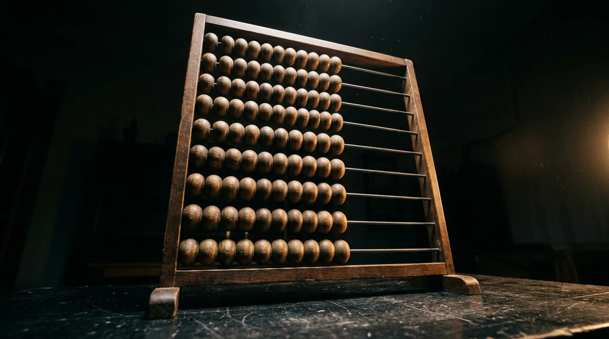

← Como Reinventar o Computador do Zero · Etapa 01 · Antiguidade → séc. XV
Antes de qualquer máquina, uma invenção: um jeito de mover quantidade fora da cabeça. O ábaco não tem engrenagem e não calcula sozinho, e mesmo assim é dele que vem tudo o que vem depois.
O episódio · ~20.000 – 2700 a.C.

27 min · 17 telas
O primeiro instrumento de calcular da humanidade, e o único desta série que você vai aprender a operar de verdade, aqui na tela. Quando o áudio pedir, aperte Próximo. Nas práticas, pause e brinque.
Como ele funciona. Cada haste é uma casa: unidade embaixo, depois dezena, centena e milhar, cada uma valendo dez vezes a de baixo. Empurrar conta soma, puxar tira. Quando a haste chega em 9 e vem mais um, ela esvazia e nasce uma conta na casa de cima. Esse é o vai-um.
As práticas e demonstrações daqui usam este modelo, o mais simples: uma conta vale uma unidade. O chinês e o japonês que aparecem nas fotos têm uma barra, e a conta de cima vale cinco. Lê mais rápido, custa uma regra a mais.